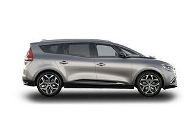

a családi autók új generációja
kezdő listaár 11 799 000 Ft|
dizájn A 7 SZEMÉLYES CSALÁDI AUTÓMivel a nagy családok számára is fontos a dizájn, a Renault Grand Scenic kifinomult külsőt kapott. Hagyja magát elcsábítani a modern és elegáns vonalvezetéssel! |
 |
VARIÁLHATÓ ÉS CSATLAKOZÁSI LEHETŐSÉGEKET BIZTOSÍTÓ EGYTERŰ
A Renault Grand Scenic kivételes kényelmet biztosít, és rendelkezik a nyugodt utazáshoz szükséges legjobb technológiákkal.
|
R-Link 2 érintőképernyő
Csupán néhány kattintás szükséges a Renault Grand Scenic technológiáinak böngészéséhez. Az érintőképernyő segítségével a kiválasztott úticélhoz navigálhat, telefonhívást kezdeményezhet vagy e-mailt küldhet egy egyszerű hangutasítással (angol nyelven). |
One-Touch azonnali variálhatóság
Hosszabb vagy nagyobb tárgyakat szeretne szállítani? Ez nem probléma, ha a Renault Grand Scenic -et választja! Egyetlen gombnyomással lehajthatja az üléseket, ráadásul így egy teljesen sík padlójú és páratlan térfogatú rakodóteret kap. |
Forras: Renault.hu